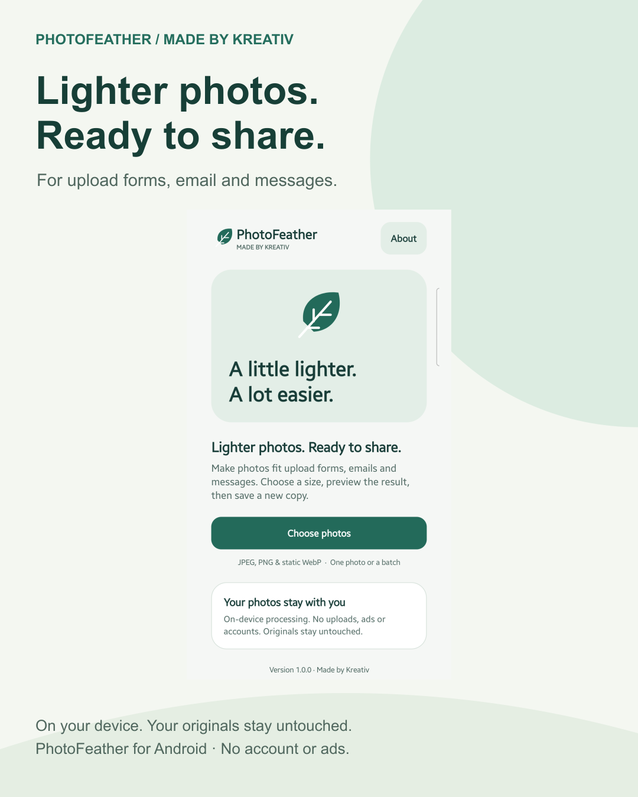
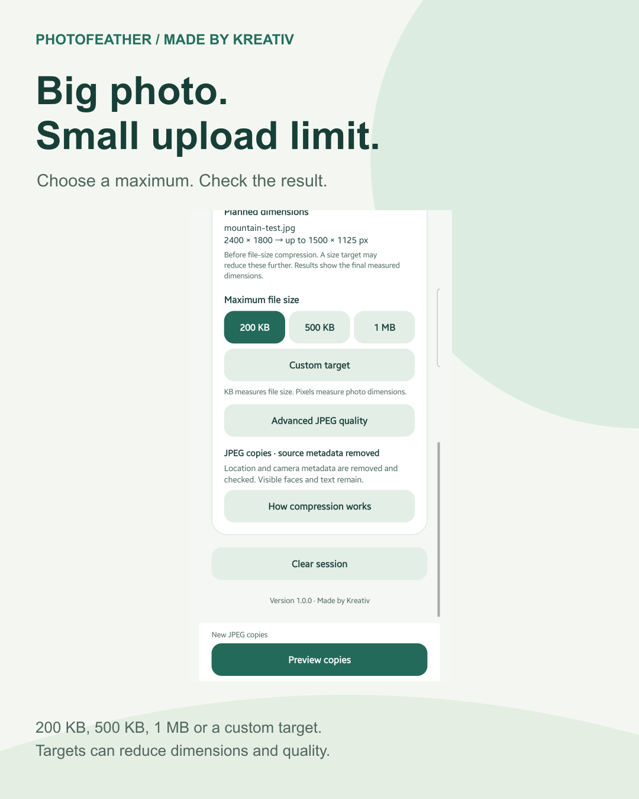
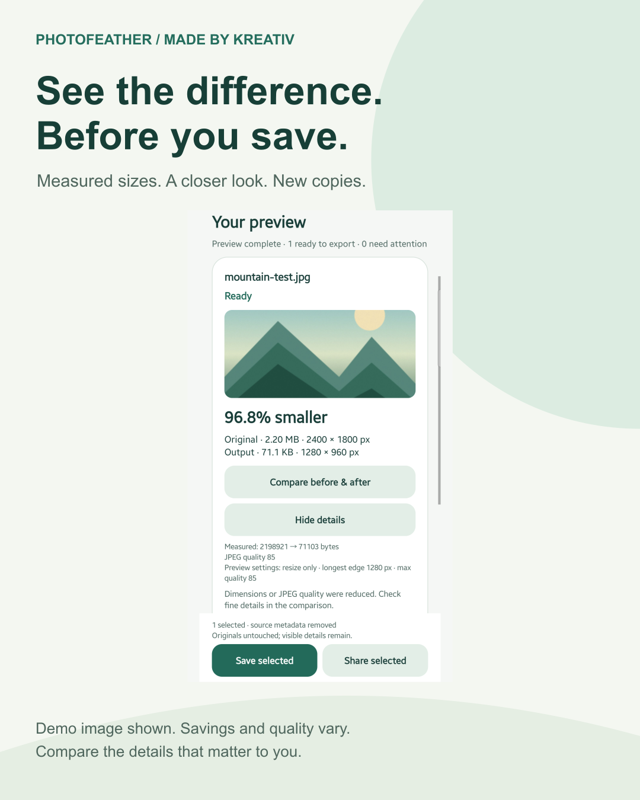
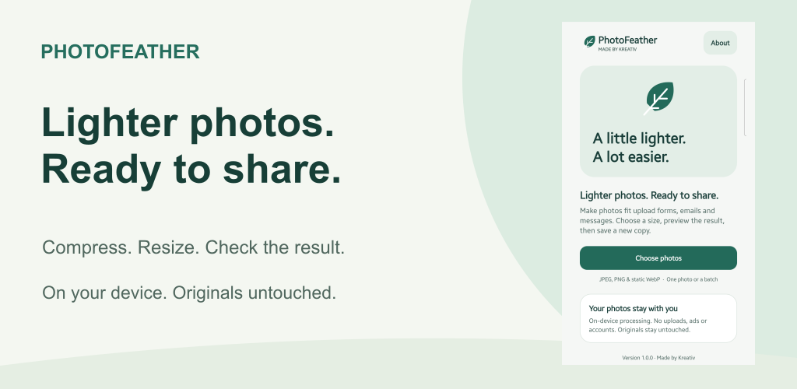
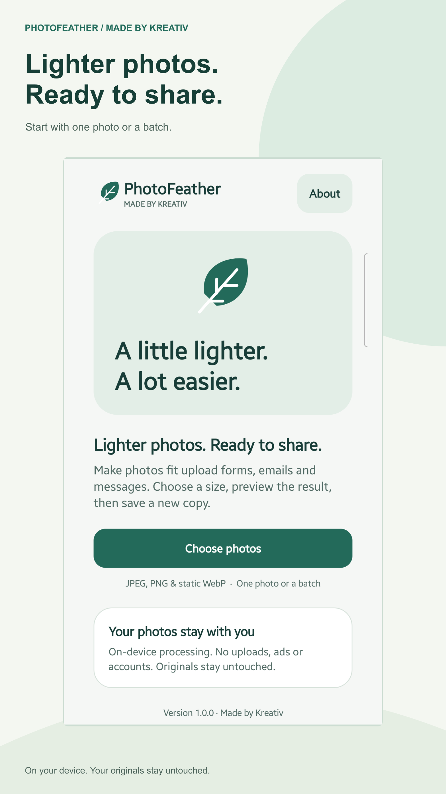
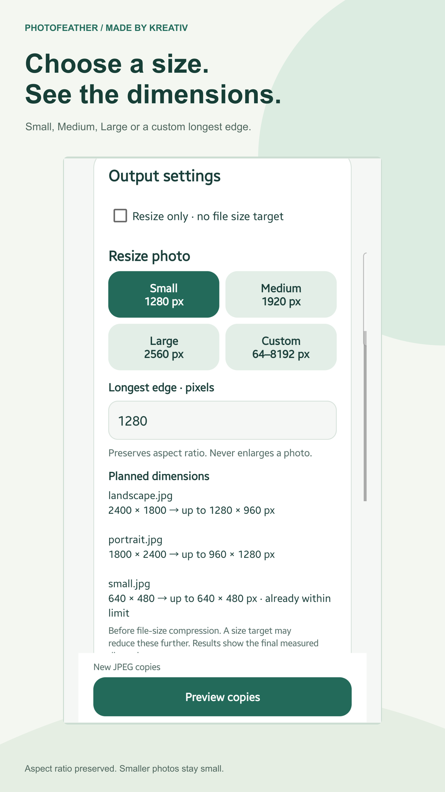
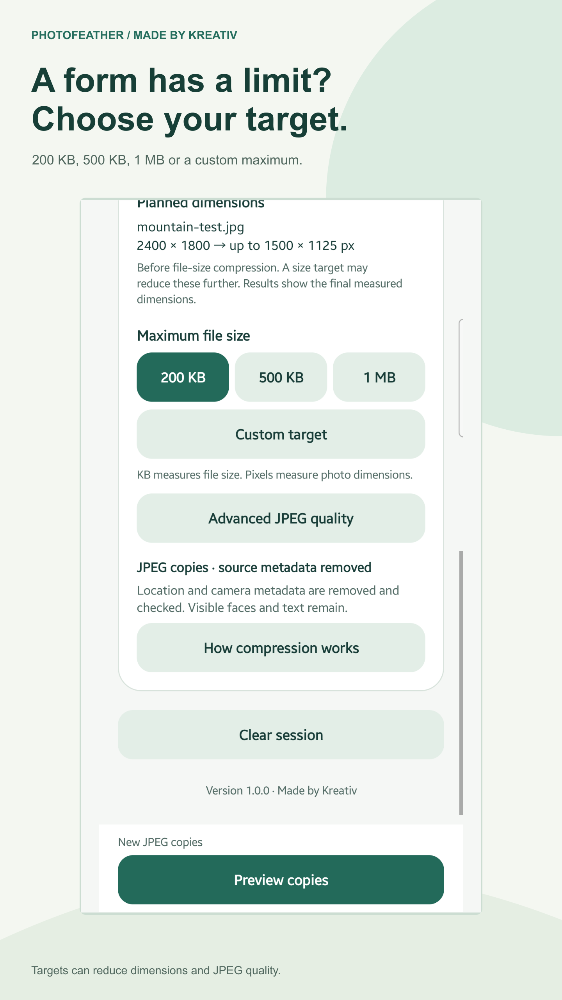
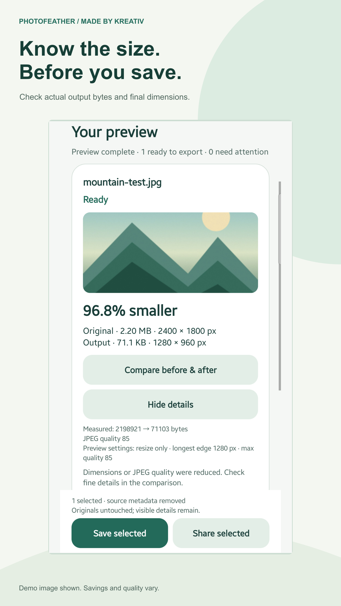
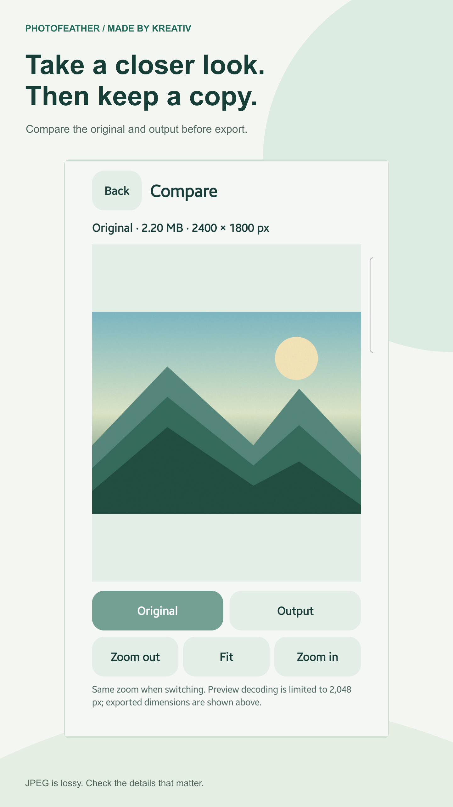
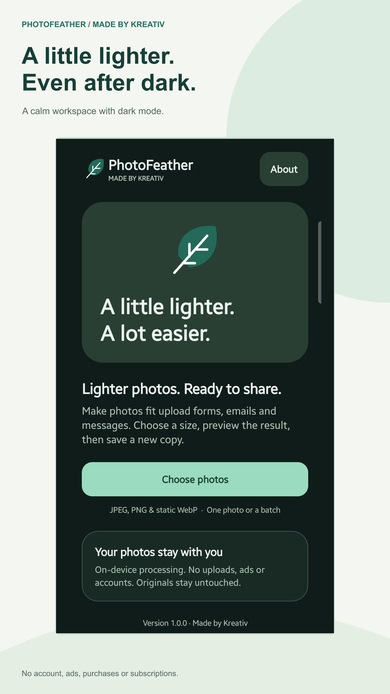

Made by Kreativ · 25 October 2026
Lighter photos.
Ready to share.
PhotoFeather promotion and listing pack for the live Android app.
Website tutorial published. Google Play listing submitted for review. Social graphics and outreach remain unpublished.
Start here · Public Play listing · Current AI-label status · Publication status
Current public app screenshots, preserved inside code-built layouts. No generated photos or baked-in AI marks added. The icon, new feature graphic and all six screenshot AI declarations are OFF. The icon matches a render of its checked-in Android vector exactly.
Three social graphics






Graphic 01 · launch caption
Photo too large for a form or email? I built PhotoFeather for Android to make that step a little easier: choose photos, set a file-size target or resize them, check the result, then save new JPEG copies or share them. Everything is processed on your device. Your originals stay untouched. No account, ads or purchases. JPEG compression can reduce quality, so you can compare before saving. Results vary by photo and settings. Try it and tell me which upload limits you run into most often. — Andrei, Made by Kreativ https://play.google.com/store/apps/details?id=com.kreativ.photofeather&utm_source=launch_social&utm_medium=social&utm_campaign=photofeather_launch_202610&referrer=utm_source%3Dlaunch_social%26utm_medium%3Dsocial%26utm_campaign%3Dphotofeather_launch_202610
English, Romanian and follow-up captions · Campaign links
Play listing audit
The live title and short description are already clear: retain them. Proposed assets below add benefit-led headings and put dark mode last.
Title 30/30 · Short 70/80 · Full 2832/4000.
PhotoFeather: Photo Compressor — current copy reference
Compress and resize photos on your device for forms, email and sharing
Lighter photos. Ready to share. PhotoFeather by Made by Kreativ helps you make photos smaller for upload forms, email and messaging. Select your photos, choose a file-size target or resize setting, preview the measured results, then save new copies or share them. CHOOSE A FILE-SIZE TARGET Try 200 KB, 500 KB, 1 MB or a custom maximum. PhotoFeather adjusts JPEG quality and, when needed, resolution within its processing limits. Results show the actual encoded file size. If a target cannot be met, the app explains it and does not offer that unsuccessful result for export. RESIZE WITH CLEAR DIMENSIONS Choose Small (1280 px), Medium (1920 px), Large (2560 px) or a custom longest edge from 64 to 8192 pixels. Aspect ratio is preserved and smaller photos are never enlarged. Planned width and height appear before processing; results show the final dimensions. Use resize-only mode when you do not need a file-size target. CHECK BEFORE YOU SAVE Compare original and output sizes, dimensions and percentage saved. Zoom and pan in the before-and-after view. Optional advanced JPEG quality controls let you set a quality limit. Large photos may be reduced to fit the app's memory limit, and a file-size target may reduce dimensions further. WORK WITH ONE PHOTO OR A BATCH Select multiple photos, follow progress, cancel processing and review per-photo results. Retry failed items or export selected successful copies. Unsupported or unreadable files are identified individually. Larger or same-sized results require your explicit choice before export. KEEP YOUR ORIGINALS PhotoFeather saves new JPEG copies and never overwrites or deletes originals. Share copies through Android's share sheet. Transparent PNG and WebP images need an opaque background for JPEG output; choose the background before converting. ON-DEVICE PROCESSING No accounts, photo uploads, advertising SDKs, analytics SDKs or subscriptions. PhotoFeather has no internet permission. Android's system picker may retrieve photos from a cloud provider you choose; the provider handles that retrieval. METADATA REMOVED FROM COPIES Source metadata, including embedded location metadata, is removed from newly encoded JPEG copies and checked before export. This does not anonymise photos or remove faces, text or sensitive details visible in the image. SUPPORTED FORMATS AND LIMITS Inputs: JPEG, PNG and static WebP. Output: lossy JPEG. HEIC/HEIF, AVIF, GIF and animated images are not supported. JPEG compression can reduce visible quality; lossless compression and guaranteed visual quality are not promised. File-size units are decimal: 1 KB = 1000 bytes and 1 MB = 1000000 bytes. Supports dark mode, large text and labelled accessibility controls. All features described here are included in version 1.0.0, with no purchases. Support: info@madebykreativ.com
Copy reference and asset proposal · Detailed audit
Proposed feature graphic

Six proposed store screenshots












Archived source URLs and hashes. Original public capture environment not independently verified. No phone or native file/share testing performed.
24-second screenshot tour
Silent vertical slideshow of published screenshots, with captions. Not live footage.
Website tutorial
Five illustrated steps: choose photos, resize, set a maximum, check results, compare and export.
Open tutorial draft · Publishing notes · Website copy proposal
Outreach templates
Unsent; no recipients or contact routes selected.
Android utility editor
For consideration: PhotoFeather, an on-device photo compressor Hello, I am Andrei from Made by Kreativ. I recently released PhotoFeather for Android. It prepares photos for forms and email with file-size targets, resize presets, measured results and comparisons. There are no ads, accounts or purchases. JPEG output is lossy and originals stay untouched. I have a screenshot walkthrough if this fits your utility-app coverage. No coverage or positive review is expected.
Practical productivity newsletter
A small Android tool for photos that exceed upload limits Hello, I developed PhotoFeather to help with a familiar problem: a form or email attachment limit. Choose a target such as 200 KB or 500 KB, inspect the measured result, then save a new JPEG copy. Processing happens on the device. If this fits your practical mobile tips, I can provide genuine app screenshots and a short tutorial.
Offline-app editor
PhotoFeather: photo resizing and compression on the device Hello, I publish Made by Kreativ. PhotoFeather is a newly released Android photo compressor with no account, advertising SDK, analytics SDK or internet permission according to its published release description. It encodes new JPEG copies, removes source metadata and keeps originals. Visible details remain, so this is not an anonymisation claim. I can share its public listing, privacy policy and screenshot walkthrough if relevant to your coverage.
Ready for review
Choose the graphic, caption and destination when ready to post. Listing replacement and website publication can follow separately. Publish and verify the tutorial before adding its URL to Play.